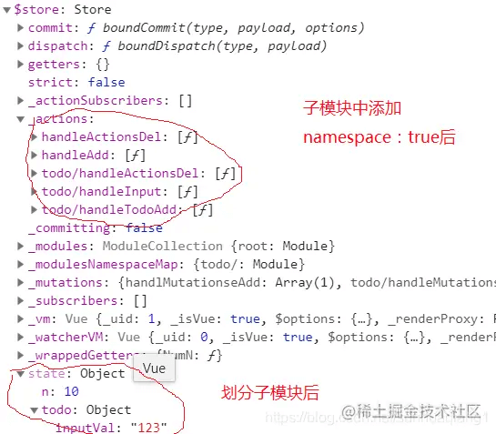

vuex中的辅助函数怎么使用？
参考答案
在实际开发中，我们经常会用到 vuex 来对数据进行管理，随着数据越来越多，我们逐渐开始使用一些语法糖来帮助我们快速开发。 即 vuex 中的 mapState、mapGetters、mapMutations、mapActions 等辅助函数是我们经常使用到的。
辅助函数
通过辅助函数mapState、mapActions、mapMutations，把vuex.store中的属性映射到vue实例身上，这样在vue实例中就能访问vuex.store中的属性了，对于操作vuex.store就很方便了。
state辅助函数为mapState，actions辅助函数为mapActions，mutations辅助函数为mapMutations。（Vuex实例身上有mapState、mapActions、mapMutations属性，属性值都是函数）
如何使用辅助函数
首先，需要在当前组件中引入Vuex。
然后，通过Vuex来调用辅助函数。
辅助函数如何去映射vuex.store中的属性
1、mapState:把state属性映射到computed身上
computed:{
...Vuex.mapState({
input:state=>state.inputVal,
n:state=>state.n
})
}
state：用来存储公共的状态 在state中的数据都是响应式的。
响应式原因：state里面有一个getters、setters方法；data中的数据也是响应式的，因为里面也有getters和setters方法
在computed属性中来接收state中的数据,接收方式有2种（数组和对象，推荐对象）.
优点：
- 本身key值是别名，要的是val的值，key的值a 和 val="a"一样就行，随意写。减少state里面长的属性名。
- 可以在函数内部查看state中的数据，数组方式的话，必须按照state中的属性名。
computed:Vuex.mapState({
key:state=>state.属性
})如果自身组件也需要使用computed的话，通过解构赋值去解构出来
computed:{
...Vuex.mapState({
key:state=>state.属性
})
}2、mapAcions：把actions里面的方法映射到methods中
methods:{
...Vuex.mapActions({
add:"handleTodoAdd", //val为actions里面的方法名称
change:"handleInput"
})
}
add、change为action方法别名，直接代用add和change方法就行，不过要记得在actions里面做完数据业务逻辑的操作。
等价于如下的函数调用，
methods: {
handleInput(e){
let val = e.target.value;
this.$store.dispatch("handleInput",val )
},
handleAdd(){
this.$store.dispatch("handleTodoAdd")
}
}
actions里面的函数主要用来处理异步的函数以及一些业务逻辑,每一个函数里面都有一个形参，这个形参是一个对象，里面有一个commit方法，这个方法用来触发mutations里面的方法
3、mapMutations：把mutations里面的方法映射到methods中
只是做简单的数据修改（例如n++），它没有涉及到数据的处理，没有用到业务逻辑或者异步函数，可以直接调用mutations里的方法修改数据。
methods:{
...Vuex.mapMutations({
handleAdd:"handlMutationseAdd"
})
}
mutations里面的函数主要用来修改state中的数据。mutations里面的所有方法都会有2个参数，一个是store中的state，另外一个是需要传递的参数。
理解state、actions、mutations，可以参考MVC框架。
state看成一个数据库，只是它是响应式的，刷新页面数据就会改变；actions看成controller层，做数据的业务逻辑；mutations看成model层，做数据的增删改查操作。
4、mapGetters:把getters属性映射到computed身上
computed:{
...Vuex.mapGetters({
NumN:"NumN"
})
}
getters类似于组件里面computed，同时也监听属性的变化，当state中的属性发生改变的时候就会触发getters里面的方法。getters里面的每一个方法中都会有一个参数 state。
5、modules属性: 模块
把公共的状态按照模块进行划分
- 每个模块都相当于一个小型的Vuex
- 每个模块里面都会有
stategettersactionsmutations - 切记在导出模块的时候加一个
namespaced:true主要的作用是将每个模块都有独立命名空间 namespace：true在多人协作开发的时候，可能子模块和主模块中的函数名字会相同，这样在调用函数的时候，相同名字的函数都会被调用，就会发生问题。为了解决这个问题，导出模块的时候要加namespace：true.
那么怎么调用子模块中的函数呢？假如我的子模块名字为todo.js。 函数名字就需要改成todo/函数名字。输出模块后的store实例如下图所示：

可以看到模块化后，store实例的state属性的访问方式也改变了，this.$store.state.todo.inputVal
可以简单总结一下辅助函数通过vuex使用，比喻成映射关系为：
mapState/mapGettes--->computed；mapAcions/mapMutations---->methods
命名空间
模块开启命名空间后，享有独自的命名空间。示例代码如下：
export default {
namespaced: true,
....
}mapState、mapGetters、mapMutations、mapActions第一个参数是字符串（命名空间名称），第二个参数是数组（不需要重命名）/对象（需要重命名）。
mapXXXs('命名空间名称',['属性名1','属性名2'])
mapXXXs('命名空间名称',{
'组件中的新名称1':'Vuex中的原名称1',
'组件中的新名称2':'Vuex中的原名称2',
})Vuex 辅助函数是用于简化 Vuex 状态管理和方法调用的语法糖。这些函数可以将 Vuex 状态和操作映射到 Vue 组件中，从而简化代码，提高开发效率。
辅助函数包括：
- mapState：将 Vuex 状态映射到组件的计算属性上。
- mapGetters：将 Vuex 计算属性（getters）映射到组件的计算属性上。
- mapMutations：将 Vuex 方法（mutations）映射到组件的方法（methods）上。
- mapActions：将 Vuex 方法（actions）映射到组件的方法（methods）上。
使用这些辅助函数，可以在组件中直接使用映射后的属性和方法，而不需要每次都手动调用 Vuex 的方法。
辅助函数的使用方式是在组件的 computed 或 methods 对象中通过 ... 语法引入，并将映射关系作为参数传递。
命名空间是 Vuex 4.0 引入的一个新特性，用于模块化 Vuex 状态管理。通过设置模块的 namespaced: true，可以给每个模块设置独立的命名空间，避免不同模块间状态和方法的命名冲突。
在引入命名空间后，模块内的状态和方法访问方式会发生变化，需要在模块名前加上 / 来访问模块内的状态和方法。
例如，如果模块名为 todo，那么访问模块内的状态 inputVal 需要写成 this.$store.state.todo.inputVal。